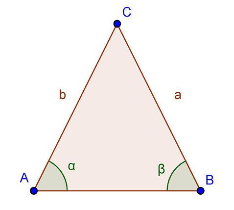

Isóceles
Un triángulo isósceles es un triángulo que tiene al menos dos lados congruentes. Los lados congruentes del triángulo isósceles se llaman patas.
Al otro lado se le llama la base.
Los ángulos entre la base y las patas se denominan ángulos de base. El ángulo formado por las dos patas se denomina ángulo de vértice. Una de las propiedades importantes de los triángulos isósceles es que sus ángulos de base son siempre congruentes. Esto se llama Teorema de Ángulos Base.
